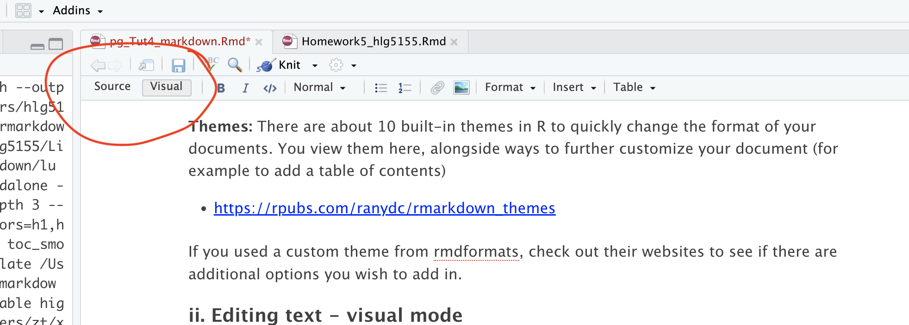

1 Visual vs source mode
RStudio’s standard output is “source mode” where you see your text in a raw format.
RStudio now provides a Visual Editor to simplify text formatting. When switched on, you see something similar to the final output format and get access to all the normal word processing buttons (e.g. bold/headings etc.). To switch between the two modes:
Click the Visual tab in the
.Rmdeditor.Use the toolbar to format text, add links, or insert images.
Switch back to Source mode to view the underlying Markdown format.

Visual mode is incredibly useful, because you don’t need to remember any of the keyboard commands for formatting text. But… it can be a pain when editing/deleting code-chunks. To do that, I often switch back to source mode.

2 Pictures and tables
These are easy to add using visual mode. Just go to the text-editing menu at the top of the report.
3 Headings
Please use these! They allow your table of contents to be created correctly which allows easy navigation in your reports. For example, Heading 1 = Chapter Title, Heading 2 = sub-title etc.
In visual mode, click on the line you want then look at the text formatting menu. Click the arrow by “normal” and change to the heading you want.
4 Mathematical equations
THESE GO INTO THE TEXT SECTION! NOT INTO A CODE CHUNK.
Although I have heard rumors you can copy/paste equations into R, the easiest way I have found is to:
First, get the equation you want in chatgpt or similar and ask it to output as LateX format
Type $$ to tell R you are adding an equation, then paste the equation in a line of its own.
e.g. If you type this into the TEXT (not a code chunk)
$$
E_n = -\frac{m e^4}{2 \hbar^2} \frac{1}{n^2}
$$In visual mode, you should see get
\[ E_n = -\frac{m e^4}{2 \hbar^2} \frac{1}{n^2} \]
If you want an equation on the same line, use single $ signs. E.g typing this into the TEXT
Hello! Here is an inline equation: $e^4$, that you can include mid-sentenceWill give you
Hello! Here is an inline equation: \(e^4\), that you can include mid-sentence.